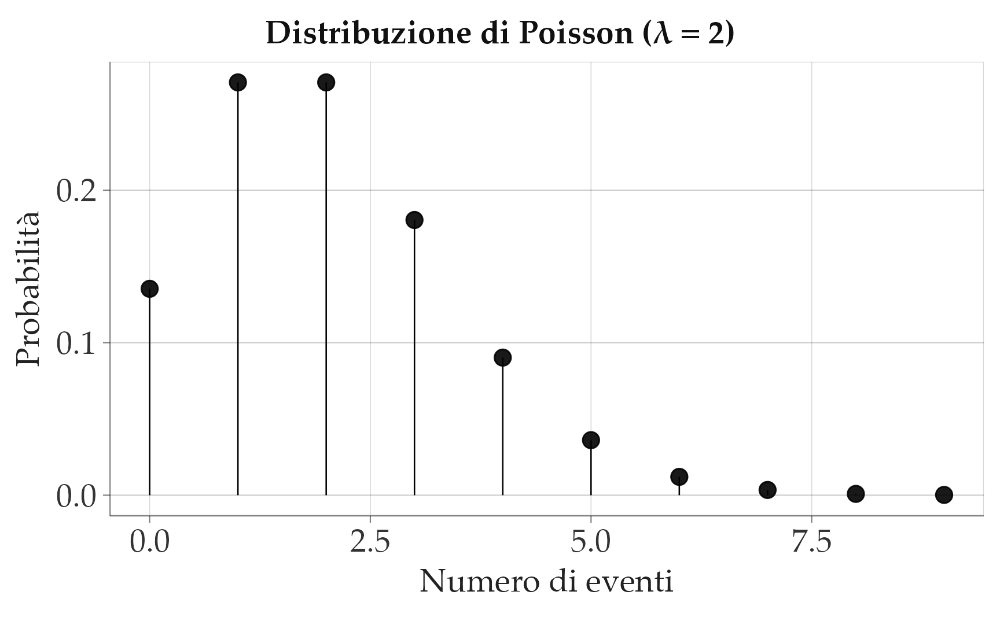
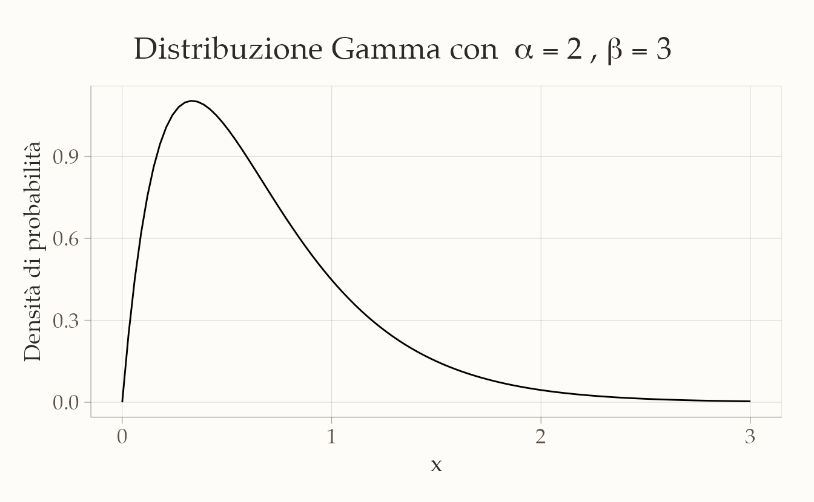
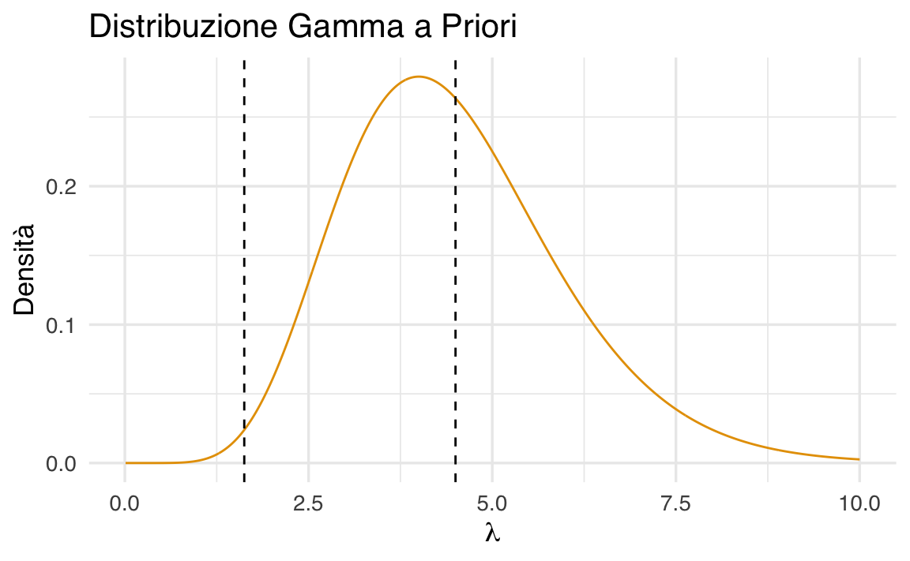
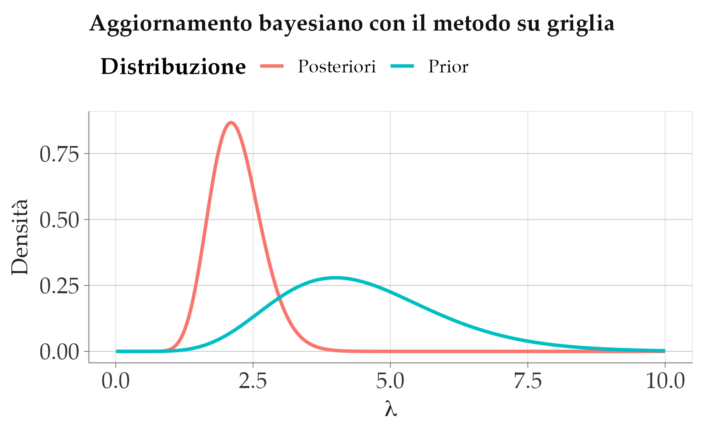

here::here("code", "_common.R") |>
source()
# Load packages
if (!requireNamespace("pacman")) install.packages("pacman")
pacman::p_load(ggdist)50 Modello coniugato Gamma-Poisson
Introduzione
In psicologia capita spesso di lavorare con variabili di conteggio, cioè variabili che registrano quante volte un certo evento si verifica. Pensiamo, ad esempio, al numero di sintomi riportati da un paziente in una settimana, oppure al numero di parole pronunciate da un bambino durante un’interazione osservata in laboratorio. In altri casi, le variabili di conteggio vengono usate in psicolinguistica per misurare la frequenza con cui certi vocaboli compaiono in un testo.
Queste variabili hanno una caratteristica importante: possono assumere solo valori interi non negativi (0, 1, 2, …). Non possiamo trattarle come se fossero variabili continue, perché la loro natura discreta richiede modelli statistici specifici. Il modello di riferimento per questo tipo di dati è la distribuzione di Poisson, che descrive la probabilità di osservare un certo numero di eventi in un intervallo di tempo (o di spazio), dato un tasso medio di incidenza.
Il parametro centrale della distribuzione di Poisson è \(\lambda\), che rappresenta proprio il numero medio di eventi per unità di misura (ad esempio, la media di compulsioni per ora, oppure la media di parole per frase). Stimare questo parametro significa, in pratica, descrivere l’intensità con cui l’evento che ci interessa tende a verificarsi.
In questo capitolo ci proponiamo due obiettivi:
- mostrare come stimare il parametro \(\lambda\) in un contesto bayesiano, utilizzando una distribuzione a priori di tipo Gamma, che si combina bene con la Poisson;
- confrontare due approcci diversi per ottenere la distribuzione a posteriori: da un lato la derivazione analitica, che sfrutta la coniugatezza tra le due distribuzioni, dall’altro una procedura di simulazione Monte Carlo, che ci permette di approssimare la distribuzione anche quando non disponiamo di formule esatte.
Questo doppio percorso è molto utile per chi studia: ci consente infatti di verificare che i metodi numerici funzionano correttamente in un caso semplice, dove conosciamo già la soluzione analitica, e ci prepara ad affrontare situazioni più complesse in cui la soluzione chiusa non esiste e la simulazione diventa indispensabile.
50.1 Distribuzione di Poisson
La distribuzione di Poisson è uno degli strumenti fondamentali per descrivere fenomeni di conteggio, cioè situazioni in cui vogliamo sapere quante volte un certo evento si verifica in un intervallo di tempo (o di spazio) fissato. L’idea di fondo è semplice: immaginiamo che gli eventi si verifichino con una frequenza media costante e che ogni evento avvenga in modo indipendente dagli altri.
Se una variabile casuale \(Y\) segue una distribuzione di Poisson con parametro \(\lambda\), la probabilità di osservare un certo numero \(y_i\) di eventi è data da:
\[ f(y_i \mid \lambda) = \frac{e^{-\lambda} \lambda^{y_i}}{y_i!}, \quad y_i \in \{0,1,2,\dots\},\ \lambda > 0. \]
Il parametro \(\lambda\) rappresenta il tasso medio di occorrenza degli eventi. Una caratteristica importante della distribuzione di Poisson è che la sua media e la sua varianza coincidono:
\[ E(Y) = \lambda, \qquad \text{Var}(Y) = \lambda. \]
Questo significa che, se in media osserviamo 2 eventi per intervallo, anche la variabilità attesa attorno a questo valore sarà pari a 2.
50.1.1 Un esempio psicologico
Per rendere più concreta l’idea, immaginiamo un paziente con disturbo ossessivo-compulsivo. Supponiamo che, in media, questo paziente compia 2 azioni compulsive all’ora. In questo caso il parametro della distribuzione di Poisson è \(\lambda = 2\).
La formula ci permette di calcolare la probabilità di osservare esattamente \(k\) eventi in un’ora. Ad esempio:
- la probabilità di osservare 0 eventi è \(\frac{e^{-2} \cdot 2^0}{0!} = e^{-2} \approx 0.1353\);
- la probabilità di osservare 1 evento è \(\frac{e^{-2} \cdot 2^1}{1!} = 2e^{-2} \approx 0.2707\);
- la probabilità di osservare 2 eventi è \(\frac{e^{-2} \cdot 2^2}{2!} = 2e^{-2} \approx 0.2707\).
50.1.2 Calcoli in R
Possiamo calcolare queste probabilità direttamente con R, usando la funzione dpois:
lam_true <- 2
k_values <- 0:9
probabilities <- dpois(k_values, lambda = lam_true)
for (i in seq_along(k_values)) {
cat(sprintf("Probabilità di %d eventi: %.4f\n", k_values[i], probabilities[i]))
}
#> Probabilità di 0 eventi: 0.1353
#> Probabilità di 1 eventi: 0.2707
#> Probabilità di 2 eventi: 0.2707
#> Probabilità di 3 eventi: 0.1804
#> Probabilità di 4 eventi: 0.0902
#> Probabilità di 5 eventi: 0.0361
#> Probabilità di 6 eventi: 0.0120
#> Probabilità di 7 eventi: 0.0034
#> Probabilità di 8 eventi: 0.0009
#> Probabilità di 9 eventi: 0.0002Questo codice calcola la probabilità di osservare tra 0 e 9 eventi in un’ora, dato che il tasso medio è 2.
Notiamo che i valori più probabili sono proprio 1 o 2 eventi per ora, mentre la probabilità di osservare molti più eventi diminuisce rapidamente.
50.1.3 Visualizzazione grafica
Un modo ancora più intuitivo per comprendere la distribuzione di Poisson è guardare il suo grafico. Con il seguente codice possiamo rappresentare la funzione di massa di probabilità (PMF) per \(\lambda = 2\):
lambd <- 2
x <- 0:9
y <- dpois(x, lambda = lambd)
df <- data.frame(
numero_eventi = x,
probabilita = y
)
ggplot(df, aes(x = numero_eventi, y = probabilita)) +
geom_segment(aes(x = numero_eventi, xend = numero_eventi, y = 0, yend = probabilita)) +
geom_point(size = 3) +
labs(title = "Distribuzione di Poisson (λ = 2)",
x = "Numero di eventi",
y = "Probabilità") +
theme(plot.title = element_text(hjust = 0.5))
Il grafico mostra con chiarezza che i valori centrati attorno a 2 hanno probabilità maggiore, mentre la probabilità decresce rapidamente per valori più alti.
50.2 Distribuzione Gamma
Per costruire un modello bayesiano con dati di tipo Poisson abbiamo bisogno di scegliere una distribuzione a priori per il parametro di tasso, \(\lambda\). La scelta più comune – e anche la più conveniente dal punto di vista matematico – è la distribuzione Gamma. Questa distribuzione, infatti, è coniugata alla Poisson: significa che, partendo da una prior Gamma e aggiornandola con dati che seguono una Poisson, la distribuzione a posteriori appartiene ancora alla famiglia delle Gamma. In pratica, la coniugatezza ci permette di aggiornare le nostre credenze in modo molto semplice e diretto, senza doverci avventurare in calcoli complicati.
La densità della distribuzione Gamma è definita dalla formula:
\[ f(x \mid \alpha, \beta) = \frac{\beta^\alpha}{\Gamma(\alpha)} x^{\alpha - 1} e^{-\beta x}, \quad x > 0 \]
dove compaiono due parametri fondamentali:
- \(\alpha\) (forma): controlla la forma della distribuzione. Con valori piccoli, la distribuzione è molto asimmetrica, concentrata vicino allo zero; aumentando \(\alpha\), la distribuzione diventa più regolare e tende ad assumere una forma simile a una normale.
- \(\beta\) (tasso o “rate”): regola la scala della distribuzione. Con valori alti, la probabilità si concentra verso valori più piccoli di \(x\); con valori bassi, la distribuzione si allarga e assegna probabilità a valori più grandi.
Alcuni esempi aiutano a chiarire:
- con \(\alpha = 2\) e \(\beta = 3\), la distribuzione descrive un processo in cui gli eventi sono relativamente rari, ma non impossibili;
- con \(\alpha = 10\) e \(\beta = 1\), invece, la distribuzione è molto più concentrata e simmetrica, riflettendo un processo più regolare e prevedibile.
In R possiamo calcolare la densità della distribuzione Gamma con la funzione dgamma:
dgamma(x, shape = alpha, rate = beta)Ad esempio, per una Gamma con \(\alpha = 2\) e \(\beta = 3\) possiamo scrivere:
alpha <- 2
beta <- 3
ggplot(data.frame(x = c(0, 3)), aes(x = x)) +
stat_function(
fun = dgamma,
args = list(shape = alpha, rate = beta)
) +
labs(
title = expression("Distribuzione Gamma con " ~ alpha == 2 ~ "," ~ beta == 3),
x = "x",
y = "Densità di probabilità"
) +
theme(plot.title = element_text(hjust = 0.5))
Il grafico mostra come la distribuzione si concentri vicino a valori piccoli di \(x\), ma lasci comunque una coda lunga verso destra. È proprio questa flessibilità che rende la distribuzione Gamma molto utile come modello a priori: può descrivere sia situazioni in cui ci aspettiamo valori piccoli ma incerti, sia casi in cui prevediamo valori medi o alti con maggiore regolarità.
50.3 La coppia coniugata Gamma–Poisson
Abbiamo visto separatamente due elementi: la distribuzione di Poisson, che descrive il numero di eventi osservati, e la distribuzione Gamma, che scegliamo come distribuzione a priori per il parametro di tasso \(\lambda\). Ora possiamo metterli insieme per costruire un modello bayesiano completo.
Il cuore del ragionamento è questo:
- i dati osservati (\(y_1, y_2, \dots, y_N\)) sono modellati come Poisson con parametro \(\lambda\);
- la nostra conoscenza a priori su \(\lambda\) è rappresentata da una distribuzione Gamma con parametri \(\alpha_{\text{prior}}\) e \(\beta_{\text{prior}}\).
Questa combinazione è molto conveniente perché la Gamma è coniugata alla Poisson. Ma che cosa significa, concretamente, “coniugata”? Significa che, dopo aver osservato i dati, la distribuzione a posteriori di \(\lambda\) rimane della stessa famiglia della priori, cioè una distribuzione Gamma. In altre parole, se parto con una Gamma e la aggiorno con dati di tipo Poisson, ottengo ancora una Gamma: cambia soltanto il valore dei parametri, che incorporano l’informazione proveniente dai dati.
50.3.1 La distribuzione a posteriori
La regola di Bayes ci dice che:
\[ p(\lambda \mid y) \propto p(\lambda) \cdot p(y \mid \lambda). \]
Sostituendo le due distribuzioni (Gamma per la priori e Poisson per la verosimiglianza), si vede facilmente che la forma risultante è ancora quella di una Gamma. I parametri aggiornati sono:
\[ \alpha_{\text{post}} = \alpha_{\text{prior}} + \sum_{i=1}^N y_i \]
\[ \beta_{\text{post}} = \beta_{\text{prior}} + N \]
Dunque, la nostra credenza su \(\lambda\) dopo aver osservato i dati è rappresentata da una distribuzione:
\[ \lambda \mid y \sim \text{Gamma}(\alpha_{\text{post}}, \beta_{\text{post}}) \]
50.3.2 Intuizione
Che cosa sta succedendo qui? L’aggiornamento dei parametri ha un’interpretazione molto intuitiva:
- \(\alpha\) aumenta con la somma degli eventi osservati: più eventi contiamo, più la distribuzione a posteriori si sposta verso valori alti di \(\lambda\).
- \(\beta\) aumenta con il numero di osservazioni \(N\): più intervalli di tempo osserviamo, più aumenta la precisione con cui stimiamo il tasso medio.
In altre parole, i parametri della posteriori rappresentano una sintesi tra la nostra conoscenza a priori e i dati raccolti.
50.3.3 Un esempio numerico
Riprendiamo l’esempio visto prima, con i dati:
y <- c(2, 1, 3, 2, 2, 1, 1, 1)Abbiamo \(N = 8\) osservazioni, e come priori scegliamo \(\alpha_{\text{prior}} = 9\) e \(\beta_{\text{prior}} = 2\).
Calcoliamo i nuovi parametri:
Il risultato è \(\alpha_{\text{post}} = 22\) e \(\beta_{\text{post}} = 10\). La nostra distribuzione a posteriori è quindi una Gamma(22, 10), che rappresenta la nuova convinzione su \(\lambda\) dopo aver visto i dati.
50.3.4 Visualizzare la posteriori
Possiamo visualizzare il cambiamento confrontando la priori e la posteriori:
x <- seq(0, 6, length.out = 500)
prior_density <- dgamma(x, shape = 9, rate = 2)
post_density <- dgamma(x, shape = alpha_post, rate = beta_post)
df <- data.frame(
x = rep(x, 2),
densita = c(prior_density, post_density),
Distribuzione = rep(c("Prior", "Posterior"), each = length(x))
)
ggplot(df, aes(x = x, y = densita, color = Distribuzione)) +
geom_line(size = 1) +
labs(
title = "Aggiornamento da Prior a Posterior (Gamma–Poisson)",
x = expression(lambda),
y = "Densità"
) +
theme(plot.title = element_text(hjust = 0.5))
Il grafico mostra chiaramente che la posteriori è più concentrata: osservare gli otto dati ci ha reso più sicuri sul valore di \(\lambda\). Inoltre, il centro della distribuzione si è spostato verso il valore suggerito dai dati, integrando così le informazioni empiriche con le credenze iniziali.
50.4 Metodo basato su griglia
Ora che abbiamo introdotto il modello Gamma–Poisson, possiamo provare a calcolare la distribuzione a posteriori del parametro \(\lambda\) non con formule chiuse, ma con un procedimento puramente numerico. Questo approccio prende il nome di metodo su griglia (grid approximation), ed è molto utile come strumento didattico: ci mostra, passo dopo passo, come funziona l’aggiornamento bayesiano, trasformando le regole matematiche in un algoritmo semplice da eseguire al computer.
L’idea è la seguente:
- fissiamo una “griglia” di possibili valori per \(\lambda\);
- calcoliamo la probabilità di ciascun valore secondo la priori;
- calcoliamo, per gli stessi valori, la verosimiglianza dei dati osservati;
- moltiplichiamo i due risultati per ottenere la distribuzione a posteriori (non ancora normalizzata);
- normalizziamo in modo che la somma totale sia pari a 1.
50.4.1 1. I dati e la priori
Prendiamo gli stessi dati già usati in precedenza, cioè il numero di compulsioni osservate in otto intervalli di tempo:
y <- c(2, 1, 3, 2, 2, 1, 1, 1)La priori scelta per \(\lambda\) è una Gamma con parametri \(\alpha = 9\) e \(\beta = 2\), che riflette la nostra convinzione iniziale che il tasso medio sia intorno a 4–5 eventi, con un certo margine di incertezza.
Creiamo una griglia di valori plausibili di \(\lambda\), ad esempio da 0 a 10, divisa in 1000 punti:
Questa curva rappresenta ciò che crediamo possibile prima di vedere i dati.
50.4.2 2. La verosimiglianza
La seconda componente è la verosimiglianza, cioè quanto ciascun valore ipotetico di \(\lambda\) rende probabili i dati osservati. Per una Poisson, la verosimiglianza è il prodotto delle probabilità individuali:
\[ \mathcal{L}(\lambda) = \prod_{i=1}^N P(Y = y_i \mid \lambda). \]
In R possiamo calcolarla in modo vettoriale:
Così, per ogni punto della griglia otteniamo il valore della verosimiglianza: se il dato osservato è molto coerente con un certo \(\lambda\), la verosimiglianza sarà alta; altrimenti sarà vicina a zero.
50.4.3 3. La distribuzione a posteriori
Il passo successivo è combinare priori e verosimiglianza. La regola di Bayes ci dice che:
\[ p(\lambda \mid y) \propto p(\lambda) \cdot \mathcal{L}(\lambda). \]
In pratica, moltiplichiamo i valori calcolati ai due passi precedenti:
posterior_unnormalized <- prior * likelihoodQuesto ci dà una curva che ha la forma giusta, ma che non è ancora una vera distribuzione di probabilità: non somma a 1.
50.4.4 4. Normalizzazione
Per trasformarla in una distribuzione valida, dobbiamo normalizzare, cioè dividere per la somma totale (che qui approssimiamo come una somma numerica sulla griglia):
grid_width <- lambda_grid[2] - lambda_grid[1]
normalization_factor <- sum(posterior_unnormalized) * grid_width
posterior <- posterior_unnormalized / normalization_factorOra abbiamo davvero la distribuzione a posteriori di \(\lambda\).
50.4.5 5. Interpretazione e confronto visivo
A questo punto possiamo confrontare la priori e la posteriori in un unico grafico:
df <- data.frame(
lambda = lambda_grid,
Prior = prior,
Posteriori = posterior
)
df_long <- pivot_longer(df, cols = c("Prior", "Posteriori"),
names_to = "Distribuzione",
values_to = "Densita")
ggplot(df_long, aes(x = lambda, y = Densita, color = Distribuzione)) +
geom_line(size = 1) +
labs(title = "Aggiornamento bayesiano con il metodo su griglia",
x = expression(lambda),
y = "Densità")
Il grafico rivela due aspetti fondamentali:
- la posteriori è spostata rispetto alla priori, perché i dati suggeriscono valori di \(\lambda\) più bassi di quanto ci aspettassimo inizialmente;
- la posteriori è anche più concentrata, cioè meno incerta: dopo aver osservato i dati, non solo abbiamo aggiornato la nostra convinzione, ma siamo anche diventati più sicuri del valore plausibile di \(\lambda\).
50.4.6 Perché è utile il metodo su griglia?
Questo metodo non è molto efficiente in problemi complessi (dove i parametri sono tanti e lo spazio da esplorare è enorme), ma è molto utile a scopo didattico. Ci mostra infatti in modo visivo e intuitivo come funziona l’aggiornamento bayesiano: partiamo da una convinzione iniziale (la prior), la confrontiamo con i dati (la likelihood) e otteniamo una nuova convinzione aggiornata (la posterior).
Nei prossimi capitoli vedremo come affrontare lo stesso problema con strumenti più generali, come il campionamento MCMC in Stan, che diventano indispensabili quando i modelli si complicano e il metodo su griglia non è più praticabile.
50.5 Riflessioni conclusive
Il modello Gamma–Poisson rappresenta un esempio chiaro ed elegante di come l’inferenza bayesiana possa essere applicata ai dati di conteggio, molto frequenti in psicologia. L’idea di fondo è semplice: partiamo da una convinzione iniziale sul tasso medio di occorrenza degli eventi, espressa attraverso una distribuzione a priori di tipo Gamma. Quando osserviamo nuovi dati, questa convinzione viene aggiornata in modo sistematico, e il risultato è una nuova distribuzione, la a posteriori, che incorpora sia ciò che sapevamo prima sia l’informazione proveniente dai dati.
Questo meccanismo ha due grandi vantaggi. Da un lato, ci fornisce stime più realistiche del parametro $$, perché non si limita a un singolo numero ma restituisce una distribuzione che descrive tutti i valori plausibili. Dall’altro, ci permette di quantificare l’incertezza: non diciamo soltanto “qual è” il tasso medio, ma anche “quanto siamo incerti” sulla sua stima.
In questo modo, il modello Gamma–Poisson non è soltanto un esercizio teorico: diventa uno strumento pratico che ci aiuta a ragionare in modo più cauto e informato quando prendiamo decisioni basate sui dati psicologici. È un primo passo per comprendere il potere dell’approccio bayesiano, che non si limita a calcolare parametri, ma ci offre un vero e proprio linguaggio per descrivere e aggiornare le nostre conoscenze.
50.6 Esercizi
Informazioni sull’ambiente di sviluppo
sessionInfo()
#> R version 4.5.1 (2025-06-13)
#> Platform: aarch64-apple-darwin20
#> Running under: macOS Sequoia 15.6.1
#>
#> Matrix products: default
#> BLAS: /Library/Frameworks/R.framework/Versions/4.5-arm64/Resources/lib/libRblas.0.dylib
#> LAPACK: /Library/Frameworks/R.framework/Versions/4.5-arm64/Resources/lib/libRlapack.dylib; LAPACK version 3.12.1
#>
#> locale:
#> [1] C/UTF-8/C/C/C/C
#>
#> time zone: Europe/Zagreb
#> tzcode source: internal
#>
#> attached base packages:
#> [1] stats graphics grDevices utils datasets methods base
#>
#> other attached packages:
#> [1] pillar_1.11.0 tinytable_0.11.0 patchwork_1.3.1
#> [4] ggdist_3.3.3 tidybayes_3.0.7 bayesplot_1.13.0
#> [7] ggplot2_3.5.2 reliabilitydiag_0.2.1 priorsense_1.1.0
#> [10] posterior_1.6.1 loo_2.8.0 rstan_2.32.7
#> [13] StanHeaders_2.32.10 brms_2.22.0 Rcpp_1.1.0
#> [16] sessioninfo_1.2.3 conflicted_1.2.0 janitor_2.2.1
#> [19] matrixStats_1.5.0 modelr_0.1.11 tibble_3.3.0
#> [22] dplyr_1.1.4 tidyr_1.3.1 rio_1.2.3
#> [25] here_1.0.1
#>
#> loaded via a namespace (and not attached):
#> [1] svUnit_1.0.6 tidyselect_1.2.1 farver_2.1.2
#> [4] fastmap_1.2.0 TH.data_1.1-3 tensorA_0.36.2.1
#> [7] pacman_0.5.1 digest_0.6.37 timechange_0.3.0
#> [10] estimability_1.5.1 lifecycle_1.0.4 survival_3.8-3
#> [13] magrittr_2.0.3 compiler_4.5.1 rlang_1.1.6
#> [16] tools_4.5.1 knitr_1.50 labeling_0.4.3
#> [19] bridgesampling_1.1-2 htmlwidgets_1.6.4 curl_6.4.0
#> [22] pkgbuild_1.4.8 RColorBrewer_1.1-3 abind_1.4-8
#> [25] multcomp_1.4-28 withr_3.0.2 purrr_1.1.0
#> [28] grid_4.5.1 stats4_4.5.1 colorspace_2.1-1
#> [31] xtable_1.8-4 inline_0.3.21 emmeans_1.11.2
#> [34] scales_1.4.0 MASS_7.3-65 cli_3.6.5
#> [37] mvtnorm_1.3-3 rmarkdown_2.29 ragg_1.4.0
#> [40] generics_0.1.4 RcppParallel_5.1.10 cachem_1.1.0
#> [43] stringr_1.5.1 splines_4.5.1 parallel_4.5.1
#> [46] vctrs_0.6.5 V8_6.0.5 Matrix_1.7-3
#> [49] sandwich_3.1-1 jsonlite_2.0.0 arrayhelpers_1.1-0
#> [52] systemfonts_1.2.3 glue_1.8.0 codetools_0.2-20
#> [55] distributional_0.5.0 lubridate_1.9.4 stringi_1.8.7
#> [58] gtable_0.3.6 QuickJSR_1.8.0 htmltools_0.5.8.1
#> [61] Brobdingnag_1.2-9 R6_2.6.1 textshaping_1.0.1
#> [64] rprojroot_2.1.0 evaluate_1.0.4 lattice_0.22-7
#> [67] backports_1.5.0 memoise_2.0.1 broom_1.0.9
#> [70] snakecase_0.11.1 rstantools_2.4.0 coda_0.19-4.1
#> [73] gridExtra_2.3 nlme_3.1-168 checkmate_2.3.2
#> [76] xfun_0.52 zoo_1.8-14 pkgconfig_2.0.3Bibliografia
Scholz, U., Stadler, G., Berli, C., Lüscher, J., & Knoll, N. (2021). How do people experience and respond to social control from their partner? Three daily diary studies. Frontiers in Psychology, 11, 613546.